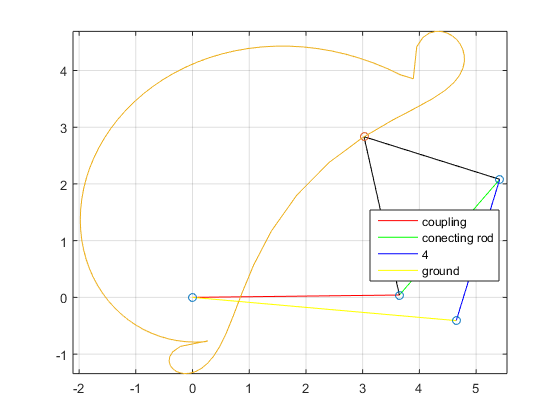
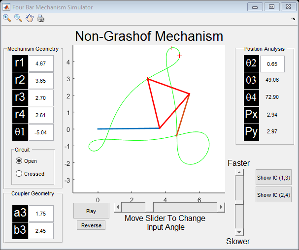

Contents
clear; clc;
Constraints
alpha2 = deg2rad(62 - 110);
alpha3 = deg2rad(39 - 110);
p21 = 1.903 + 1i*1.374;
p31 = 1.389 + 1i*1.830;
Free Choices
beta2 = deg2rad(30);
beta3 = deg2rad(60);
gamma2 = deg2rad(-10);
gamma3 = deg2rad(25);
Vecter Setup and Solution
A1 = [exp(1i*beta2)-1, exp(1i*alpha2)-1;...
exp(1i*beta3)-1, exp(1i*alpha3)-1];
A2 = [exp(1i*gamma2)-1, exp(1i*alpha2)-1;...
exp(1i*gamma3)-1, exp(1i*alpha3)-1];
B = [p21; p31];
WZ = A1\B;
W = WZ(1);
Z = WZ(2);
US = A2\B;
U = US(1);
S = US(2);
Other Plotting Necesities
V = Z-S;
G = W+V-U;
ang1 = atan2(imag(G),real(G));
theta = atan2(imag(W),real(W));
Display Solution
disp(['Link 1 has length ' num2str(abs(G))]);
disp(['Link 2 has length ' num2str(abs(W))]);
disp(['Link 3 has length ' num2str(abs(V))]);
disp(['Link 4 has length ' num2str(abs(U))]);
stuff = four_bar_func([rad2deg(ang1) rad2deg(theta) 10 10], [abs(G) abs(W) abs(V) abs(U)], [1.7 2.3], [1 1]);
Link 1 has length 4.6679
Link 2 has length 3.6477
Link 3 has length 2.6994
Link 4 has length 2.6058

Animate
pp = [W+Z; W+Z+p21; W+Z+p31];
Four_Bar([W Z U S],pp,'play');
